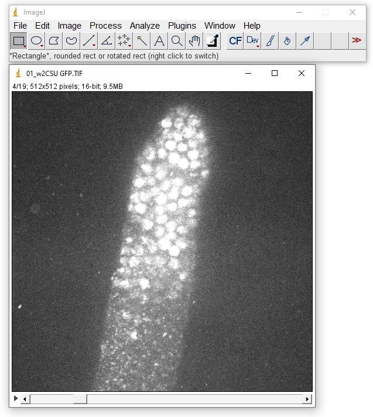
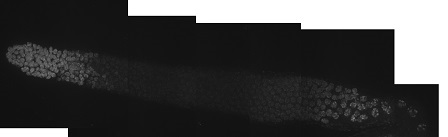
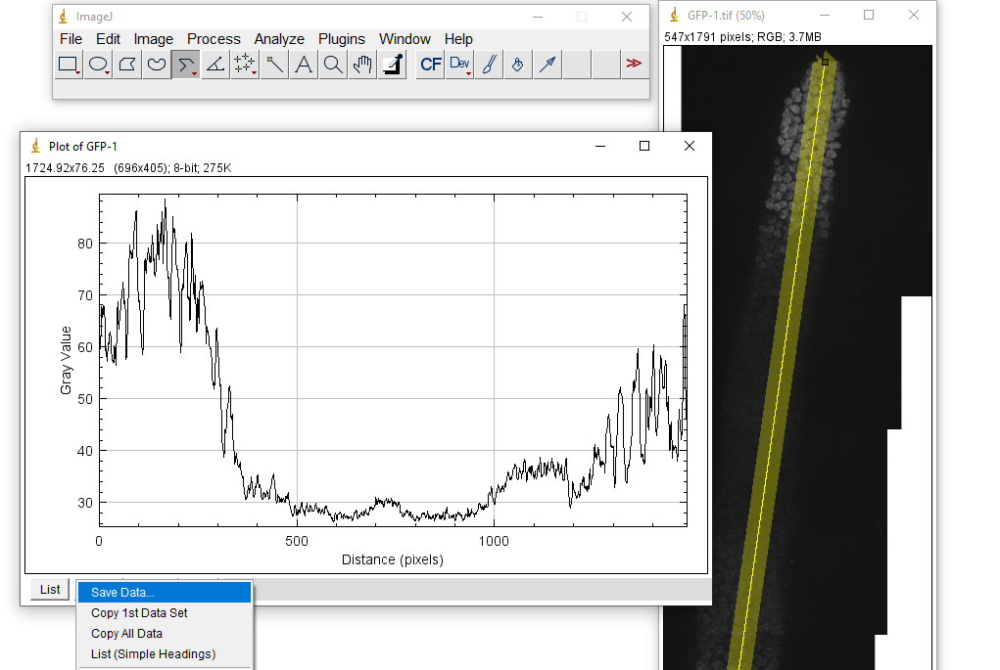

Get started!
Follow these steps (Press button to expand):



Save as .tif and open with imageJ for next steps

Right click to switch from straight line to segmented line. Double-click to change line width.


Each file represents the fluorescence intensity of one gonad.

Will group several samples/files of the same strain/experiment.
Will group several samples/files for multiple strains in the same graph.
If you have any doubt of how to use the website after reading the "Get Started" information: